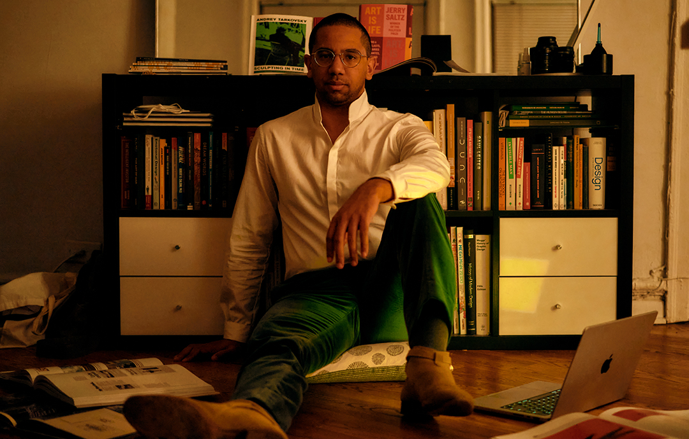

A Picture is worth 1,000 worlds
Writer. Wanderer. Designer. Dreamer.Whatever it is, I imagine. I invent, I bend, I break, I think, I think, & I think, & think, & try to create work that helps people see things a little differently. I think every project has the potential to be someone else's escape to a far-off place.
The 100,000 Hour Rule
Wake up, walk, work, rest, read, work, walk, sleep. I work to play. I work to relax. I work on vacation. I study work. I study tools, rules, the history, & future of creativity – When I close my eyes, I look for ways to make my work 1% better. It's why I read ADG before NYT. It's why I got a camera before a couch. It’s why I push myself and my teams whether it's the 100th brief, or the 1,000th project, or the 10,000th hour. I think great things come those who persist.What's next
I never felt as if I "Art Direct". Is that even a verb? I sketch & write & scratch & claw & whine & read & photograph & photoshop & film & edit & trim & cut & cook & travel & talk & listen & pitch & sell & fail & rise. When I learn something new, I look for something new. And I'm always looking for what's next.Creative Superb Vision
I try to absorb as much as I create; a frequent museum, theater, symphony, and park-goer. But nothing beats film. Every Thursday, I slam my laptop shut, run over to AMC, & hop into row D (right up front) to escape for a couple hours. Some favorites include Corsage - A heartbreaking dive into the mind of a woman drowning for freedom. Puss in Boots - A weirdly stylish film that felt like Stalker, remade for kids. Lost Illusions - A debaucherous whirlwind of the struggles writers face, whether working for art or commerce. Fabelmans - A wonderfully crafted look at truths cameras can reveal.Now, let's get to back to work, robertbuber@gmail.com.